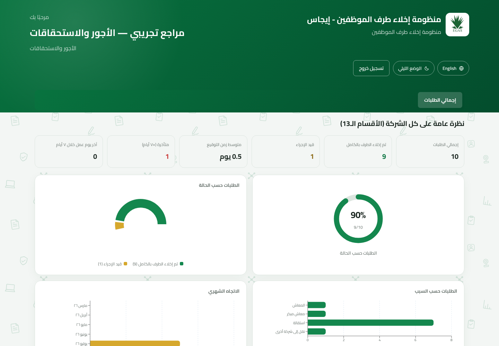

دليل هندسي · الإصدار ٢٫٠
التوثيق التقني والمعماري
المعمارية ونموذج البيانات وقواعد العمل وواجهات API ونقاط التوسعة والتشغيل وإجراءات التغيير الآمن.
المعمارية ونموذج البيانات وقواعد العمل وواجهات API ونقاط التوسعة والتشغيل وإجراءات التغيير الآمن.
هذا الدليل للمطورين ومسئولي قواعد البيانات والتشغيل الذين يحتاجون إلى فهم التطبيق أو صيانته أو توسيعه أو استكشاف أعطاله. أُعدّ من المستودع الفعلي والنسخة المحلية العاملة.
| ١. نظرة عامة ومعمارية النظام | التعريف |
| ٢. خريطة المستودع وبيئة التشغيل | المطورون |
| ٣. نموذج البيانات العلائقي | الخلفية / DBA |
| ٤. قواعد العمل والصلاحيات | جميع القائمين بالصيانة |
| ٥. واجهات API ودورة الطلب | الخلفية / التكامل |
| ٦. معمارية الواجهة الأمامية | الواجهة الأمامية |
| ٧. الأدلة وملفات PDF | الخلفية / التشغيل |
| ٨. وصفات التغيير الآمن | تطوير الخصائص |
| ٩. النشر والاختبار والاستعادة | التشغيل |
| ١٠. المخاطر وقائمة الصيانة | مالكو النظام |
تقوم المنظومة برقمنة إخلاء طرف موظفي إيجاس. يتصل تطبيق React أحادي الصفحة بواجهة Express JSON. تتحقق Express من رموز JWT والصلاحيات، وتحفظ البيانات في PostgreSQL عبر Sequelize، وتحفظ أدلة التوقيع على القرص، وتولد نموذج PDF مركبًا من القالب الرسمي.
| الطبقة | التقنية | المسئولية |
|---|---|---|
| الواجهة الأمامية | React 18، Vite، React Router، Axios، Recharts | لوحات الأدوار والنماذج والتحليلات والمعاينة. |
| الترجمة | react-i18next | واجهة عربية/إنجليزية ودعم RTL. |
| الخلفية | Node.js، Express 4 | REST والتحقق وقواعد العمل وتقديم الملفات. |
| المصادقة | JWT، bcryptjs | الدخول بالبريد وكلمة المرور وإعادة التحقق. |
| قاعدة البيانات | PostgreSQL، Sequelize | الحسابات والقوالب ولقطات الطلب وحالة التدقيق. |
| الأدلة وPDF | multer، pdf-lib، fontkit، canvas | رفع الملفات ومعاينتها ودمجها في القالب. |
يلزم Node.js 18 أو أحدث وPostgreSQL متاح. لا ترفع backend/.env أو أسرار الإنتاج إلى Git.
انتقل التطبيق من MongoDB إلى PostgreSQL مع الحفاظ على شكل الطلب المتداخل القديم بواسطة requestAssembly.js. بريد المستخدم هو المفتاح users.userID، ومفتاح الإدارة هو departments.key، وتستخدم الطلبات UUID.
| الجدول | الغرض والحقول المهمة |
|---|---|
| departments | قالب الإدارات الـ١٣: الاسمان والترتيب والمرحلة والإشراف ونمط التوقيع. |
| department_checklist_items | قالب البنود الخمسة لتكنولوجيا المعلومات. |
| users | البريد كمفتاح، hash، الدور، الإدارة، بند IT، الهاتف، وإجبار تغيير كلمة المرور. |
| clearance_requests | بيانات الموظف والمغادرة والمنشئ والحالة والاعتماد وسجل إزالة الصلاحيات. |
| request_departments | لقطة كل إدارة مع التوقيع وبيانات الدليل وهوية الموقع والوقت والملاحظات. |
| request_items | لقطة بنود IT وتوقيع ودليل كل بند. |
عند إنشاء الطلب، تنسخ الأسماء والترتيب والمرحلة ونمط التوقيع والبنود إلى صفوف تخص الطلب. تؤثر تغييرات القالب اللاحقة على الطلبات الجديدة فقط. لا تربط الطلبات التاريخية بالقالب الحي بدل اللقطة.
| الدور | حدود المسارات والبيانات |
|---|---|
| file_management | جميع الملخصات والأدلة؛ إنشاء وإعادة فتح واعتماد وحذف الطلبات المكتملة وPDF، مع إخفاء هوية الموقع. |
| reviewer | الإدارة الخاصة فقط، عدا إشراف الأجور/المالية. IT تحصل على مؤشرات جاهزية آمنة. |
| admin | إدارة file_management وreviewer فقط، دون وصول للطلبات. |
| super_admin | إدارة admin فقط، وحساب وحيد ينشأ من إعداد قاعدة فارغة. |
تفرض الخلفية الصلاحيات. حراس React لتحسين التجربة وليسوا حدًا أمنيًا. يحمل JWT هوية المستخدم والدور والإدارة وبند IT وحالة الإشراف وتغيير كلمة المرور الإجباري.
تبدأ المسارات بـ /api. يضيف Axios الرمز من localStorage في ترويسة Bearer.
| الطريقة والمسار | الغرض والصلاحية |
|---|---|
| GET /health | فحص سلامة العملية. |
| POST /auth/login | تحويل بيانات الدخول إلى رمز. |
| GET /auth/setup-status POST /auth/setup | الإعداد الأول؛ ينشئ المسؤول الرئيسي فقط إذا كان عدد المستخدمين صفرًا. |
| GET/POST /auth/accounts | للمسؤولين ومفلتر حسب الأدوار المسموح بها. |
| POST /auth/reset-password POST /auth/delete-account | إعادة تعيين/حذف مع حدود الدور وإعادة التحقق. |
| POST /auth/set-new-password | استبدال كلمة المرور المؤقتة. |
| GET /departments | قالب عام للنماذج. |
| GET /departments/coverage | فجوات التغطية في المسؤول والوثائق والمراجعين. |
| POST /requests | إنشاء الطلب ولقطات الإدارات. |
| GET /requests و /:id | قائمة/تفاصيل حسب الدور. |
| POST /requests/:id/sign | توقيع إدارة عادية مع دليل. |
| POST /requests/:id/items/:itemKey/sign | توقيع بند IT مع دليل. |
| POST .../reopen | مسح التوقيع والدليل للمخول. |
| POST /requests/:id/approve | اعتماد إدارة الوثائق. |
| POST /requests/:id/revoke-access | إجراء IT النهائي وحساب الاكتمال. |
| GET .../evidence/... | تقديم دليل بعد فحص الصلاحية. |
| GET /requests/:id/pdf | توليد PDF بعد فحص الصلاحية. |
يعرف App.jsx المسارات العامة وأربع لوحات محمية. يحول RequireRole غير المسجلين، ويفرض تغيير الكلمة المؤقتة، ويمنع عرض دور خاطئ.

واجهة المراجع العربية الفعلية وتوضح الجداول والمخططات والترجمة والعرض المبني على الدور.
يجب إضافة كل نص جديد إلى en.json وar.json. اختبر العربية RTL والإنجليزية، بما فيها النصوص الطويلة والجداول والنوافذ والمخططات. لا تكتب نصوص الواجهة مباشرة داخل المكونات.
تُحفظ الأدلة تحت backend/uploads/<requestId>/. تحفظ قاعدة البيانات الرابط وMIME والاسم الأصلي، بينما تقرر المسارات المحمية حق المستخدم في الملف.
تقبل مسارات التوقيع JPG وPNG وPDF. يجب أن يظل التحقق متسقًا بين إرشاد الواجهة وmulter والمعاينة والبيانات التجريبية ودمج PDF.
تحمل clearancePdf.js القالب، وتضمن خطوط Cairo، وتعالج الصور وPDF، وتضع التوقيعات في إحداثيات الإدارات، ثم تعيد الملف. لا تستبدل النموذج قبل التحقق من المقاسات وكل الإحداثيات.
حدّث enum وJWT والوسيط والمسارات والحجب والتوجيه وتسلسل إدارة الحسابات وفحص التغطية والترجمات والاختبارات. ابدأ بصلاحيات الخادم ثم العرض.
| الحاجة | الطريقة المفضلة | ما يجب تجنبه |
|---|---|---|
| إنشاء/إعادة/حذف مستخدم | واجهة المسؤول أو API المصدق. | SQL مباشر يتجاوز hash والقواعد. |
| تعديل قالب الإدارات | مصدر البيانات ثم upsert المتكرر بأمان. | تغيير لقطات الطلبات التاريخية جماعيًا. |
| حذف طلب | إجراء إدارة الوثائق المخول على طلب مكتمل، ويتعامل مع DB والملفات. | حذف الصف فقط أو الملفات فقط. |
| تصحيح دليل | إعادة فتح الإدارة/البند ثم التوقيع. | استبدال الملف على القرص. |
| تصحيح تاريخي | migration معتمدة ومدعومة بنسخة وtransaction. | SQL عشوائي على الإنتاج. |
استخدم نافذة صيانة للتغييرات المهمة، وسجل المفاتيح المتأثرة والعدد المتوقع وخطوات الرجوع. لا تعدل passwordHash يدويًا؛ استخدم مسار إعادة التعيين.
تنشئ smoke test حسابات وطلبات مؤقتة وتختبر حدود الأدوار والمسار الكامل. لا توجه اختبارات الحذف أو الضغط إلى الإنتاج دون مراجعة صريحة.
تشمل النسخة الكاملة قاعدة PostgreSQL ومجلد uploads ومراجعة الكود المنشورة وقالب PDF ومتغيرات البيئة في مخزن أسرار معتمد. اختبر الاستعادة في بيئة معزولة وافحص معاينة الدليل وتوليد PDF، وليس عدد الصفوف فقط.
| الخطر | الأثر | التخفيف |
|---|---|---|
| قفل المسؤول الرئيسي | لا يستطيع دور آخر إعادة تعيينه. | حفظ آمن واعتماد إجراء استعادة تنظيمي مجرّب. |
| تعديل المخطط تلقائيًا | قد ينفذ sync alter تغييرات عند البدء. | نسخ وstaging وإصدارات مضبوطة؛ التفكير في migrations رسمية. |
| الأدلة على الملفات | نسخة DB وحدها ناقصة والتوسع يحتاج تخزينًا مشتركًا. | نسخ موحد ووحدة دائمة؛ object storage عند التوسع. |
| JWT في localStorage | XSS قد يكشف الجلسة. | CSP ونظافة المدخلات وتجنب HTML غير الآمن؛ دراسة HttpOnly cookies. |
| مسارات الإعداد والاتصال العامة | سطح غير مصدق مقصود. | أقل حقول ممكنة وإعادة فحص users=0 لحظيًا. |
| تقادم الوثائق | القواعد المتغيرة تجعل الإجراءات غير آمنة. | تحديث README وCLAUDE وPROJECT_STATUS والاختبارات والأدلة مع التغيير. |